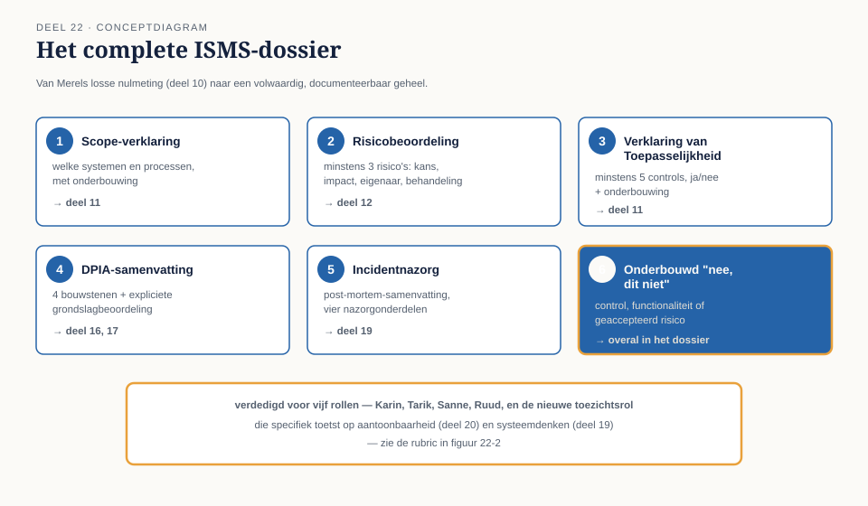
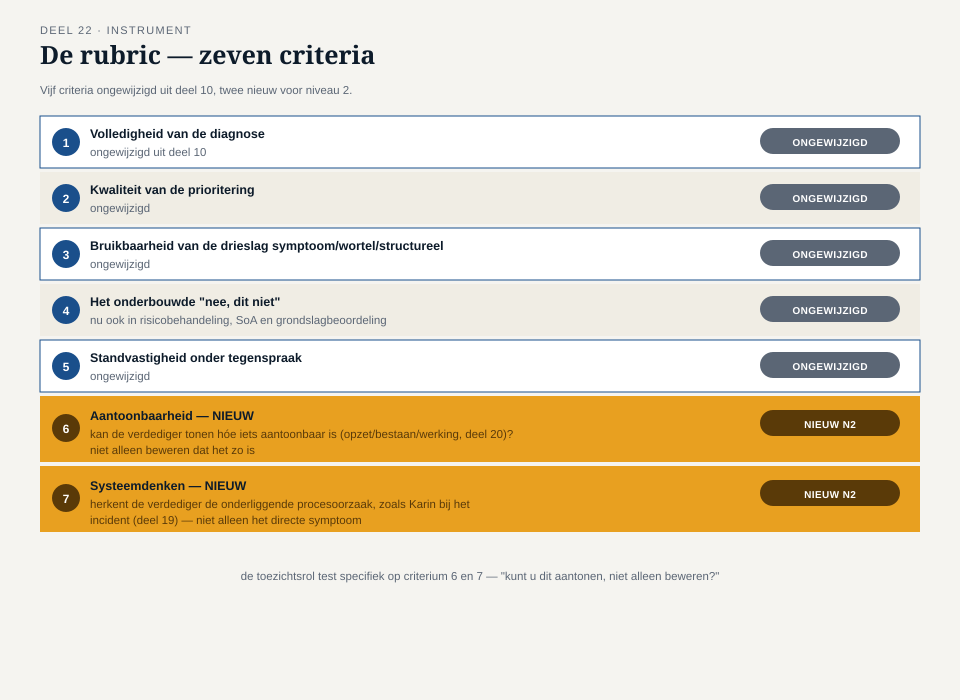

Deel 22 — Examentraining (Lead Implementer + CIPP/E) en capstone niveau 2
Reader · Ductus-cursus Informatiebeveiliging en privacy · niveau 2 (professional) · deel 22 van 22
Casusafsluiting: het complete dossier
Twaalf delen geleden begon niveau 2 met Karins vraag: "Ik wil iets dat blijft werken, ook als jij op vakantie bent." Sindsdien is het Mutatieplatform gebouwd, ingericht, getroffen door een echt incident, en getest op herstel. Wat ooit Merels losse nulmeting was (de capstone van deel 10), is nu een volwaardig, documenteerbaar ISMS: een scope, een risicobeoordeling, een Verklaring van Toepasselijkheid, DPIA's, een uitzonderingenregister, een incidentdossier, en een continuïteitsplan met een geteste (en inmiddels gecorrigeerde) herstelprocedure.
Dit laatste deel van niveau 2 bereidt je voor op twee certificeringslijnen tegelijk — ISO/IEC 27001 Lead Implementer en IAPP CIPP/E — en vraagt je vervolgens, net als in deel 10, dit complete dossier te bouwen en te verdedigen. Nu niet voor vier rollen, maar voor vijf: Karin, Tarik, Sanne, Ruud, en een nieuwe rol die specifiek toetst op de niveau 2-stof: een toezichtsrol die de kwaliteit van het hele ISMS beoordeelt zoals een auditor of toezichthouder dat zou doen.
1. Wat Lead Implementer en CIPP/E toetsen
ISO/IEC 27001 Lead Implementer (PECB-lijn) toetst het vermogen om een ISMS daadwerkelijk in te richten: scope bepalen, risicobeoordeling uitvoeren, de Verklaring van Toepasselijkheid opstellen, beleid en standaarden ontwikkelen, en het geheel klaarmaken voor certificering. Dit bouwt rechtstreeks voort op deel 11 t/m 15 en deel 21 van deze cursus.
IAPP CIPP/E (Certified Information Privacy Professional/Europe) toetst kennis van Europees gegevensbeschermingsrecht in de praktijk: grondslagen, DPIA's, internationale doorgifte, en de rol van de FG. Dit bouwt rechtstreeks voort op deel 16, 17 en 18.
Zoals altijd: deze cursus bereidt voor, maar vervangt het officiële examenmateriaal niet. Controleer bij inschrijving het actuele examenformaat, de actuele exameneisen, en (voor CIPP/E) de geldigheidsduur en de vereiste bijscholingspunten bij de officiële aanbieder.
2. Oefenvragen in examenstijl
Vraag 1 (Lead Implementer). Een organisatie past control X uit Bijlage A niet toe en documenteert dit met de onderbouwing "niet relevant voor onze risico's". Is dit een correcte toepassing van de Verklaring van Toepasselijkheid?
A) Nee, alle 93 controls moeten worden toegepast B) Ja, mits de onderbouwing daadwerkelijk op de eigen risicobeoordeling is gebaseerd C) Nee, een SoA mag nooit een control uitsluiten D) Ja, ongeacht de onderbouwing
Antwoord: B.
Vraag 2 (Lead Implementer). Wat is het belangrijkste verschil tussen risico "verminderen" en risico "vermijden"?
A) Verminderen is altijd goedkoper B) Vermijden verwijdert de activiteit die het risico veroorzaakt, verminderen beperkt kans of impact terwijl de activiteit blijft bestaan C) Er is geen verschil D) Vermijden is alleen mogelijk bij technische risico's
Antwoord: B.
Vraag 3 (Lead Implementer). Een uitzondering op een beveiligingsstandaard wordt toegekend zonder vervaldatum. Wat is het grootste risico hiervan volgens deze cursus?
A) De uitzondering kost extra papierwerk B) De uitzondering wordt een stilzwijgende, permanente aanpassing van de norm die niemand meer controleert C) Uitzonderingen zonder vervaldatum zijn wettelijk verboden D) Er is geen risico, zolang de uitzondering ooit is goedgekeurd
Antwoord: B.
Vraag 4 (Lead Implementer). Wat onderscheidt een interne audit van een zelfevaluatie?
A) Een interne audit kost meer geld B) Een interne audit wordt uitgevoerd door iemand die onafhankelijk is van het beoordeelde onderdeel C) Zelfevaluatie is verplicht, interne audit niet D) Er is geen relevant verschil
Antwoord: B.
Vraag 5 (CIPP/E). Een verwerking vindt plaats binnen een bredere overeenkomst met de betrokkene. Wanneer dekt de grondslag "overeenkomst" deze specifieke verwerking?
A) Altijd, zolang de betrokkene een overeenkomst heeft B) Alleen als deze specifieke verwerking daadwerkelijk noodzakelijk is voor de uitvoering van die overeenkomst C) Nooit, aanvullende verwerkingen vereisen altijd toestemming D) Alleen als de verwerkingsverantwoordelijke dat zo documenteert
Antwoord: B.
Vraag 6 (CIPP/E). Bij de drietrapstoets voor gerechtvaardigd belang: wat gebeurt er als trap 1 (doel) en trap 3 (balans) slagen, maar trap 2 (noodzaak) niet?
A) De grondslag is alsnog houdbaar met twee van de drie geslaagd B) De grondslag is niet houdbaar; alle drie trappen moeten afzonderlijk slagen C) Trap 2 is de minst belangrijke en kan worden genegeerd D) Dit is alleen relevant bij bijzondere persoonsgegevens
Antwoord: B.
Vraag 7 (CIPP/E). Wanneer is voorafgaande raadpleging van de toezichthouder verplicht?
A) Bij elke DPIA B) Wanneer een DPIA een hoog restrisico laat zien dat niet met beschikbare maatregelen voldoende kan worden beperkt C) Alleen als de betrokkene daarom vraagt D) Nooit, dit is geen bestaande verplichting
Antwoord: B.
Vraag 8 (CIPP/E). Wat is vereist voordat een hoofdverwerker een subverwerker mag inschakelen?
A) Niets, dit is volledig aan de hoofdverwerker B) Voorafgaande toestemming van de verwerkingsverantwoordelijke, specifiek of algemeen met bezwaarrecht C) Alleen een melding achteraf D) Toestemming van de betrokkenen zelf
Antwoord: B.
3. De capstone-opdracht
Onderdeel A — het complete dossier (individueel of in kleine groepjes)
Stel, voortbouwend op de nulmeting uit deel 10, een compact maar compleet ISMS-dossier op voor het Mutatieplatform. Het dossier bevat:
- Scope-verklaring (deel 11): welke systemen en processen vallen binnen het ISMS, met een korte onderbouwing van de gekozen afbakening.
- Risicobeoordeling (deel 12): minstens drie risico's, elk met kans, impact, risico-eigenaar en gekozen behandeloptie.
- Verklaring van Toepasselijkheid — uittreksel (deel 11): minstens vijf controls uit Bijlage A, met per control "van toepassing: ja/nee" en een onderbouwing.
- DPIA-samenvatting (deel 16, 17): voor één verwerking naar keuze, de vier bouwstenen kort ingevuld, inclusief een expliciete grondslagbeoordeling.
- Incidentnazorg (deel 19): een korte, gestructureerde post-mortem-samenvatting van een zelfgekozen (of het cursus-)incident, met de vier nazorgonderdelen.
- Minstens één onderbouwd "nee, dit niet" ergens in het dossier — een control die niet wordt toegepast, een functionaliteit die wordt afgewezen, of een risico dat bewust wordt geaccepteerd.
Onderdeel B — de verdediging (groepsopdracht, vijf rollen)
In groepen van vijf of zes verdedigt de opsteller (of de groep gezamenlijk) het dossier voor vijf rolspelers:
- Karin, Tarik, Sanne, Ruud — zoals in deel 10, elk met hun eigen perspectief (haalbaarheid, techniek, rechtmatigheid, uitvoerbaarheid).
- De toezichtsrol (nieuw) — speelt een auditor of toezichthouder die specifiek test op de niveau 2-vaardigheden: "Kunt u aantonen dat deze control daadwerkelijk werkt, niet alleen dat hij is toegepast?" (deel 20), "Waarom is deze grondslag houdbaar — loop de drietrapstoets voor me na" (deel 17), "Wat was de onderliggende procesoorzaak van dit incident, niet alleen de directe technische fout" (deel 19).
Verloop (circa 30 minuten per groep): presentatie van het dossier inclusief het "nee, dit niet" (7 minuten), kritische vragen van alle vijf rollen (18 minuten), korte gezamenlijke reflectie (5 minuten).
4. De rubric
Beoordeling volgt dezelfde vijf criteria als deel 10, met twee aanvullingen die specifiek bij niveau 2 horen:
- Volledigheid van de diagnose (ongewijzigd uit deel 10).
- Kwaliteit van de prioritering (ongewijzigd).
- Bruikbaarheid van de drieslag symptoom/wortel/structureel (ongewijzigd).
- Het onderbouwde "nee, dit niet" (ongewijzigd, en op dit niveau te herkennen in zowel de risicobehandeling als de Verklaring van Toepasselijkheid als de grondslagbeoordeling).
- Standvastigheid onder tegenspraak (ongewijzigd).
- Aantoonbaarheid (nieuw voor niveau 2) — kan de verdediger, wanneer de toezichtsrol doorvraagt, daadwerkelijk laten zien hóe iets aantoonbaar is (opzet, bestaan, werking — deel 20), niet alleen beweren dat het zo is?
- Systeemdenken (nieuw voor niveau 2) — herkent de verdediger, wanneer een probleem wordt voorgelegd, de onderliggende procesoorzaak (zoals Karin deed bij het incident in deel 19), in plaats van alleen het directe symptoom te benoemen?
5. Drie doorstroomcriteria naar niveau 3
Voor wie doorstroomt naar niveau 3 (expert, gericht op de Stelselovergang), zijn er drie vaardigheden uit niveau 2 die als stevig fundament worden verondersteld: het kunnen uitvoeren van een volledige risicobeoordeling met behandelkeuze (deel 12), het kunnen doorlopen van de drietrapstoets bij gerechtvaardigd belang (deel 17), en het kunnen herleiden van een incident naar een onderliggende procesoorzaak (deel 19). Wie zich hier bij de verdediging onzeker over voelt, doet er goed aan deze delen voorafgaand aan niveau 3 nog eens door te nemen — niveau 3 bouwt op deze drie vaardigheden voort zonder ze opnieuw grondig te herhalen.
6. Wat dit afsluit, en wat het opent
Met deze verdediging is niveau 2 inhoudelijk compleet: van losse maatregelen (deel 11) naar een volwaardig, getest en doorleefd managementsysteem, inclusief een echt incident en een geteste herstelprocedure. Niveau 3 verlegt de casus naar de Stelselovergang — de Wtp-transitie met deadline 1 januari 2028 — en de blik naar besturen en verantwoorden op het hoogste niveau: DORA, toezicht door DNB en de AP, auditeren, een volledig privacyprogramma, en uiteindelijk de masterproef waarin een ketenincident negen maanden voor de deadline alles samenbrengt wat de hele cursus tot dan toe heeft opgebouwd.

